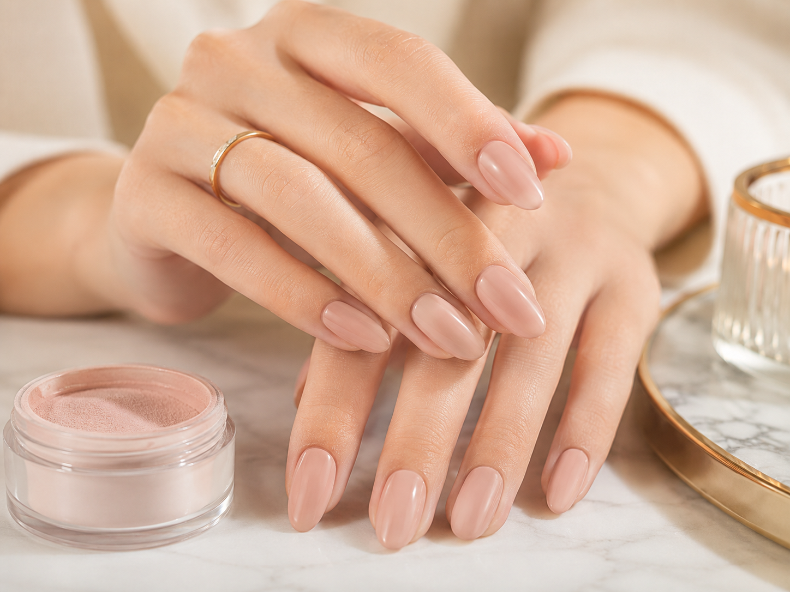

If you've ever sat in our salon in Warrensburg and asked "should I get acrylic or Gel X?" — you're not alone. It's one of the most common questions our technicians hear every single day. Both are fantastic nail extension options, but they work very differently and suit different people. Let's settle this once and for all.
What is Acrylic?

Acrylic nails at T-T Nails & Spa — Warrensburg, MO
Acrylic nails have been the industry standard for decades. The process involves combining a liquid monomer with a powder polymer to create a hard paste that's sculpted directly onto the nail. Once it's shaped and cured in open air, it becomes incredibly hard and durable.
Acrylic has been around since the 1970s and remains one of the most widely used nail extension systems in the world — and for good reason. It's tried, tested, and when done correctly by a skilled technician like our team at T-T Nails & Spa, it can look absolutely stunning.
- Application method: Liquid monomer + powder polymer mixed and sculpted by hand
- Curing method: Air-dries in open air — no UV lamp needed for the base structure
- Finish: Very hard, rigid surface — excellent durability
- Shapes available: Coffin, stiletto, square, almond, oval — all achievable
- Best for: Clients who want maximum length and strength
What is Gel X?

Gel X extensions at T-T Nails & Spa — the modern alternative to acrylic
Gel X is a newer system developed by Aprés Nail that uses pre-shaped soft gel tips bonded to the natural nail with gel adhesive, then cured under a UV/LED lamp. The result is a lightweight, flexible extension that looks incredibly natural.
Gel X has taken the nail industry by storm since it launched, and in 2026 it has become the most requested extension service at T-T Nails & Spa in Warrensburg. Our clients love it because it's gentler on natural nails and feels more comfortable to wear.
- Application method: Pre-shaped soft gel tips bonded with gel adhesive
- Curing method: UV/LED lamp — takes about 60 seconds per hand
- Finish: Flexible, lightweight — feels very close to natural nails
- Shapes available: Coffin, almond, round, stiletto — all pre-shaped
- Best for: Clients who want a natural feel with less nail damage
"In 2026, Gel X is our #1 requested extension at T-T Nails & Spa — and once clients try it, most never go back to acrylic."
Head-to-Head Comparison
| Category | Acrylic | Gel X |
|---|---|---|
| Durability | 3–5 weeks Winner | 2–4 weeks |
| Natural feel | Stiff, rigid | Flexible, lightweight Winner |
| Nail damage | More filing & drilling required | Minimal prep, gentler Winner |
| Odor during application | Strong chemical smell | Little to no odor Winner |
| Strength | Extremely hard Winner | Strong but flexible |
| Application time | 60–90 minutes | 45–75 minutes Winner |
| Nail art compatibility | Excellent | Excellent |
| Removal process | Long soak — can damage nails | Easier soak-off, gentler Winner |
| Breaks/snaps | Snaps cleanly | Bends before breaking Winner |
| Best shape options | More sculptable Winner | Pre-shaped tips |
Which One is Right for You?
Choose Acrylic If…
- You want maximum length and extreme durability
- You work with your hands a lot and need rock-hard nails
- You prefer very specific custom shapes sculpted by hand
- You're used to the feel of stiff, hard extensions
- You want fills to last up to 5 weeks
- You have a tight budget and want the longest-lasting fill
Choose Gel X If…
- Your natural nails are thin, weak, or damaged
- You want extensions that feel light and natural
- You're sensitive to chemical smells
- You want less damage when removing
- You're new to extensions and want something gentler
- You want a faster application with stunning results
Not Sure Which to Choose?
Our technicians at T-T Nails & Spa will assess your natural nails and recommend the perfect extension for your lifestyle and nail goals. Walk in or call ahead!
📞 Call (660) 747-2247What About Builder Gel?
There's actually a third option that's growing in popularity in 2026 — Builder Gel, also known as Structure Gel. Think of it as a middle ground between acrylic and Gel X:
- Applied like gel but builds thickness and strength like acrylic
- Cured under UV/LED lamp — no strong odor
- More flexible than acrylic but stronger than Gel X
- Excellent for clients who want to grow out their natural nails with added strength
- One of the best nail extension options in 2026 for long-term nail health
Many of our Warrensburg clients who previously did acrylic have switched to Builder Gel and love the results. Ask our team about it at your next visit!
Gel X Wins in 2026 — But Acrylic Still Has Its Place
For most clients — especially first-timers, those with weaker nails, or anyone who prioritizes comfort and nail health — Gel X is the better choice in 2026. It's gentler, lighter, faster, and the results are just as gorgeous. However, if you need extreme durability, love very long lengths, or want a specific custom shape sculpted by hand, acrylic remains a powerful option. The best answer? Talk to our technicians — we'll look at your nails and lifestyle and recommend exactly what's right for you.
Frequently Asked Questions
Can I switch from acrylic to Gel X?
Does Gel X damage natural nails?
How long does Gel X last compared to acrylic?
Which is better for nail art?
Where can I get Gel X or acrylic nails in Warrensburg, MO?
Book Your Nail Extension Appointment in Warrensburg, MO
Whether you choose acrylic, Gel X, or Builder Gel, our experienced team at T-T Nails & Spa will deliver beautiful results every time. We serve clients from Warrensburg, Knob Noster, Whiteman AFB, Centerview, and all of Johnson County, MO.
Visit us at 1125 N. Simpson Dr. Ste L, Warrensburg, MO 64093, open Monday through Saturday 9:00 AM – 7:00 PM. Walk-ins always welcome!
Call (660) 747-2247 to book your appointment today.